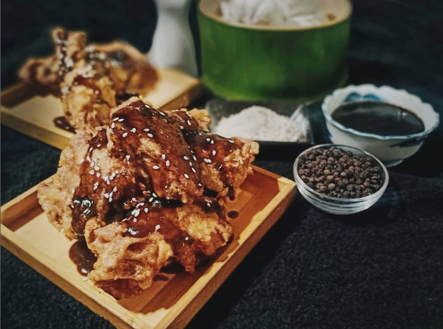
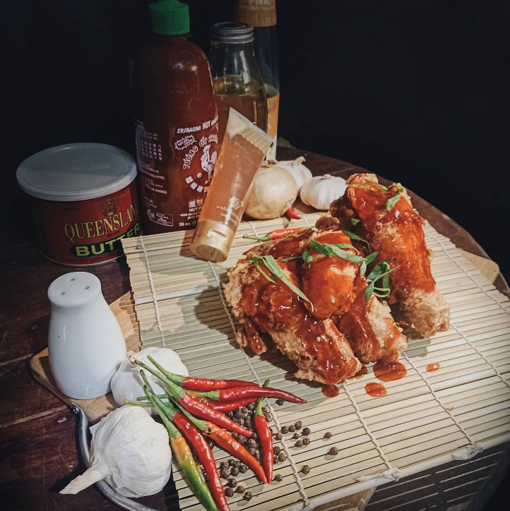

🍗 Soy-Garlic Wings Bliss 🌿
Take a flavor journey to Asia with our Soy-Garlic Wings, where the umami goodness of soy meets the aromatic allure of garlic. Each succulent wing is meticulously coated in a tantalizing glaze, ensuring a perfect blend of sweetness and savory notes. Get ready for a taste sensation that will transport you to the streets of Seoul, where soy-garlic wings reign supreme!
🌶️ Sriracha Wings Sensation 🚀
Ignite your taste buds with our Sriracha Wings – the perfect marriage of heat and flavor! Immerse yourself in the bold, spicy kick of Sriracha sauce, expertly combined with the crispy perfection of our wings. Whether you're a spice enthusiast or looking to elevate your wing game, our Sriracha Wings are sure to deliver an unforgettable, fiery experience!